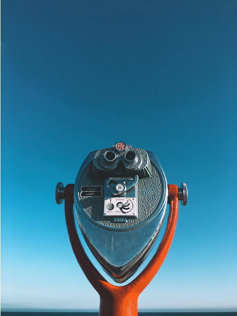
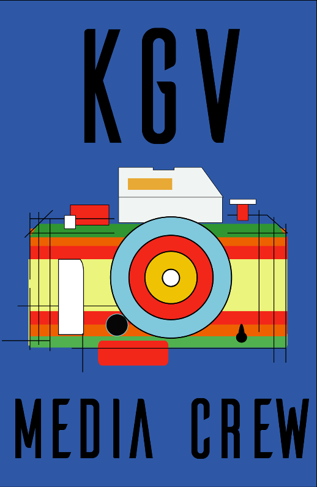
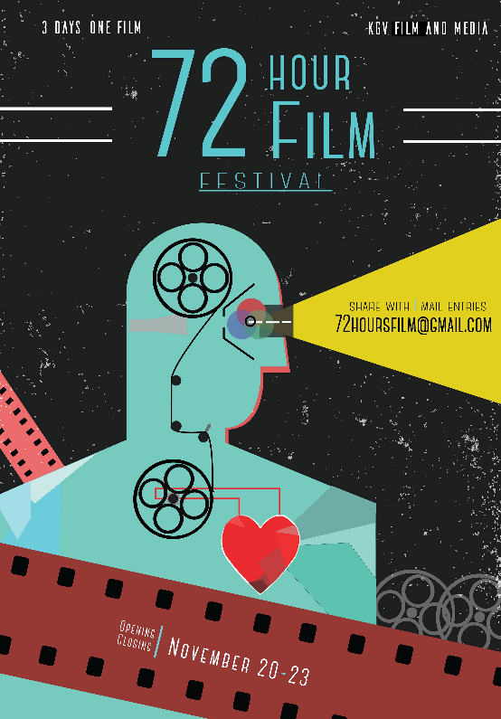

Photography and graphic design are two major passions of mine. In the field of photography, I don't have a particular genre I enjoy specifically, although I do enjoy landscapes and portraiture more than other forms. I enjoy experimenting with film photography - I now own two film cameras: Nikon FM, and Olympus OM-1. I particularly enjoy shooting on film, for the colors that film produces are superior to digital photography (I think anyway). My favorite films to shoot are: Pan F 50, Colorplus 200, and Ektar 100. I also enjoy graphic design - during my time in high school, I volunteered to design posters and other miscellaneous graphics my middle school film teacher needed.
  